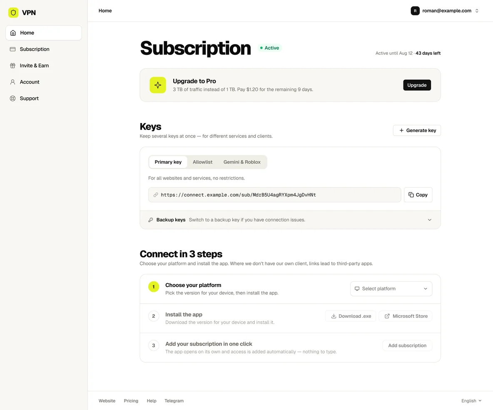

VPN service
May 2026–PresentApps and web account
- Remote
- Web, iOS, Android, Android TV
Overview
A consumer VPN service with 275K+ monthly users in Telegram and 40,000 daily users on the web. The product had gone a long time without changes when I joined in May 2026. I own product design: the web account, the main landing page, and the apps.
Web Account
I pitched a redesign of the web account several times until it was prioritized: the product needed it to scale and to ship new features. After release, both versions ran side by side. 96% of users stayed on the new account, and then everyone moved over.

Pricing and Billing
- A new plan grid and plan-change flow
- Extra-traffic purchases, where bought traffic carries over to the next month
- Warnings as traffic runs out, and states for a grace period, an expired subscription, and a blocked account
Apps and Sign-in
- Split tunneling for apps and sites, with each mode explained in one sentence: “These apps bypass the VPN. Everything else goes through it.”
- Moving a key to another device by QR code, with a warning before reissuing a key that stops working everywhere
- Sign-in by magic link, one-time code, password, or social account, with every state specified for engineering: disabled, invalid, rate-limited, and server error
In Progress
- Connection settings for restrictive networks, with warnings wherever a change can break the connection
- Device sessions on desktop and mobile
Outcome
Since May 2026: the new web account, split tunneling, the new plan grid, and the plan-change and extra-traffic flows shipped.